مين يعمل إيه
| الجزء | الموظف | مدير الفريق | المدير العام | الشئون الإدارية | الأدمن |
|---|
| اليوم والتخطيط | — | فريقه | عرض فقط | ✓ | ✓ |
| الإجازات وبدل الراحة | — | يسجّل لفريقه | عرض فقط | ✓ | ✓ |
| جدول الفريق | — | يبني ويبعت | يعتمد / يرجّع | الليلي والعطلات والإيميل | ✓ |
| تعديل وردية يوم | — | فريقه | — | ✓ | ✓ |
| تعزيز بدل الورديات | يعزز / يعترض | يعزز الفريق | يعزز القطاع | يوصله الإيميل | يبدأ الإرسال |
| تصدير بدل الورديات | — | بصلاحية | بصلاحية | ✓ | ✓ |
| رفع ملفات الحضور والجدول | — | — | — | ✓ | ✓ |
| التحليل | — | فريقه | كل الفرق | ✓ | ✓ |
| الإعدادات | — | — | — | إعدادات الحضور | ✓ + المستخدمين |
| جدولي | ✓ | لو ليه رقم موارد بشرية | — | — | — |
Mصباحي 7-3Dعادي 8-4Eمسائي 2-10Nليلي 10-7
OFFراحة / إجازةCDبدل راحةSBاحتياطي
اليوم القوى العاملة › اليوم
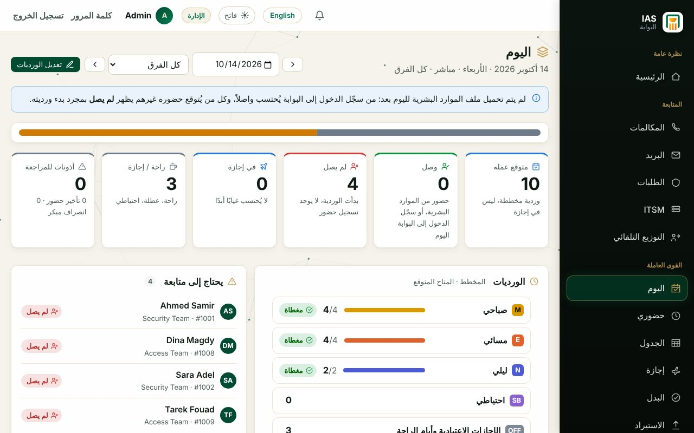
صورة اليوم: متوقع عمله، وصل، لم يصل، في إجازة.
- اختار اليوم والفريق من فوق.
- الكروت بتوضح مين متوقع، مين وصل، ومين لسه.
- تغيير وردية / إجازة لتعديل يوم موظف بسرعة.
- تبويب توافر الفريق: عدد كل وردية مقابل المطلوب.
الجدول القوى العاملة › الجدول
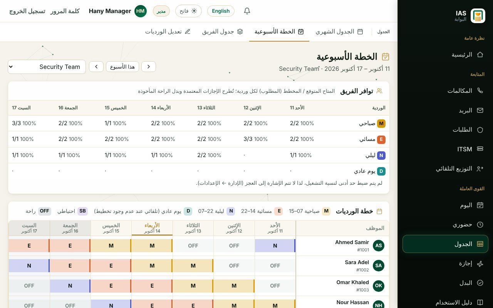
الخطة الأسبوعية: توافر كل وردية لكل يوم.
- الخطة الأسبوعية: اختار فريق، وغيّر وردية أي يوم. كل تغيير بيتسجل بسببه.
- تعديل الورديات: غيّر وردية موظف أو سجّل له إجازة في يوم معيّن. كل تغيير بيتسجل بالقيمة القديمة والجديدة والسبب.
- صفحات الجدول كلها تحت الجدول: الجدول الشهري · الخطة الأسبوعية · جدول الفريق · تعديل الورديات.
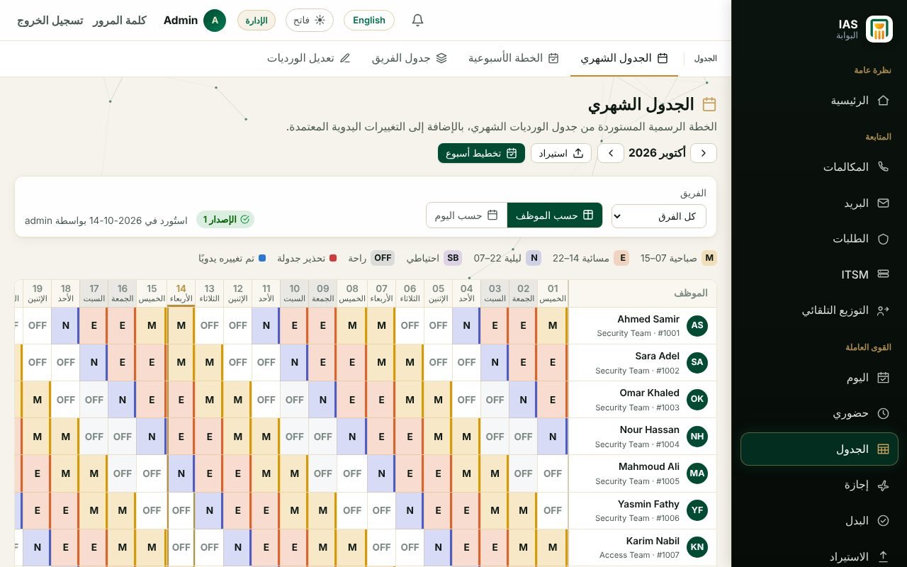
الجدول الشهري الرسمي لكل موظف.
- الجدول الشهري هو الجدول الرسمي (بعد اعتماد جدول الفريق أو رفع الإكسل).
- اضغط على أي خانة لتغيير وردية اليوم (المدير لفريقه) واكتب السبب.
- «حسب الموظف» أو «حسب اليوم»، والفلتر بالفريق.
الإجازات وبدل الراحة القوى العاملة › إجازة (إجازة / بدل الراحة)
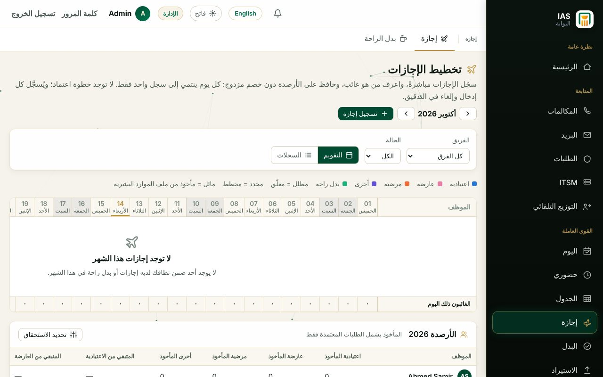
تقويم الإجازات للفريق.
- المدير يدوس تسجيل إجازة لأي فرد في فريقه: النوع والتاريخ والسبب.
- الإجازة بتتحسب على طول، وبتظهر في اليوم وجدول الفريق والجدول الشهري.
- الموظف اللي في إجازة مش بيتحسب غايب، ومش بيتحط في وردية يومها.
- تبويب بدل الراحة لتسجيل أيام بدل الراحة.
أرصدة الإجازات (الاستحقاق) بيدخلها الأدمن.
جدول الفريق القوى العاملة › الجدول › جدول الفريق
المدير يبني الشهر←المدير العام يعتمد = رسمي فورًا←الشئون الإدارية: الليلي والعطلات + الإيميل
طريقتين لعمل الجدول: جدول الفريق بالسحب والإفلات، أو رفع جدول الإكسل زي الأول.
مدير الفريق
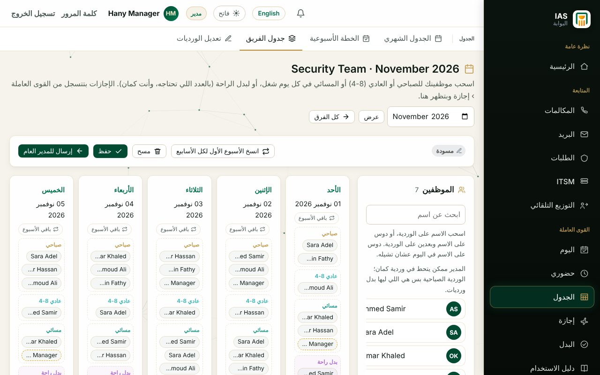
كل يوم من الأحد للخميس: صباحي · عادي 8-4 · مسائي · بدل راحة.
- اسحب اسم الموظف للوردية (على الموبايل: دوس الاسم ثم الوردية). تقدر تحط نفسك كمان.
- باقي الأسبوع ينسخ اليوم لباقي الأسبوع، وانسخ الأسبوع الأول لكل الأسابيع للشهر كله.
- حفظ ثم إرسال للمدير العام.
- لو اترجع لك، الملاحظة بتظهر فوق: عدّل وابعته تاني.
المدير ليه بدل الوردية الصباحية + العطلات فقط. العادي 8-4 مش وردية (مالوش بدل).
المدير العام
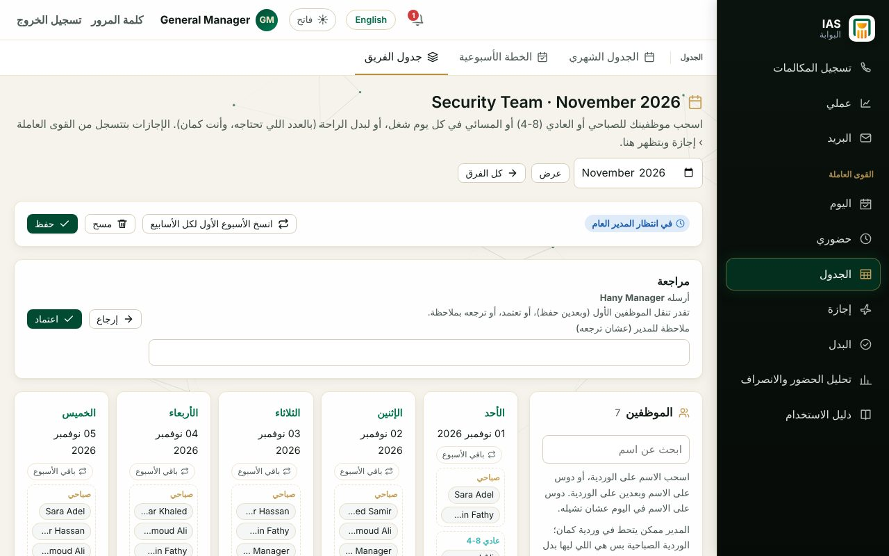
مربع «مراجعة» بيظهر لما المدير يبعت.
- افتح الفريق من جدول الفريق.
- تقدر تنقل الموظفين وتدوس حفظ.
- اعتماد: الجدول يبقى رسمي على طول ويظهر في الجدول الشهري وجدول كل موظف.
- أو اكتب ملاحظة ودوس إرجاع.
الشئون الإدارية
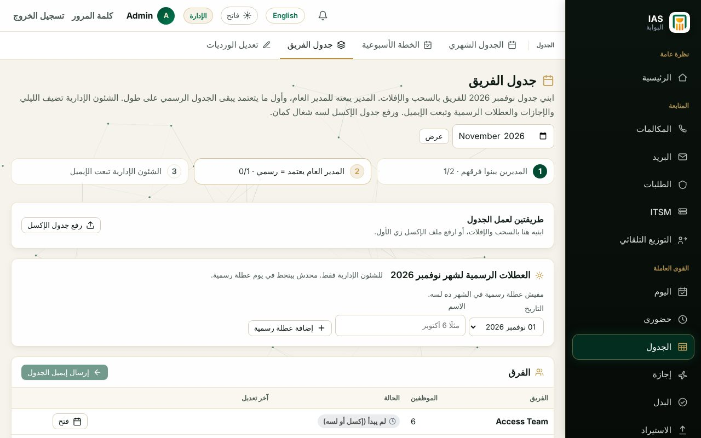
حالة كل فريق والعطلات الرسمية وزرار الإيميل.
- أضف العطلات الرسمية للشهر (محدش بيتحط فيها).
- افتح أي فريق وحط الليلي والإجازة (الخانتين دول ليك انت بس).
- أي تعديل منك على فريق معتمد بيتحدث في الجدول الرسمي فورًا.
- بعد اعتماد كل الفرق: إرسال إيميل الجدول للـ To/CC.
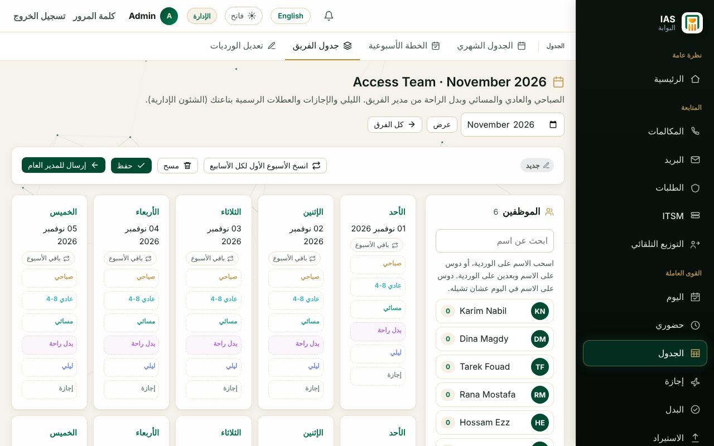
خانات «ليلي» و«إجازة» تظهر للشئون الإدارية بس.
- عناوين الإيميل من إعدادات الحضور والانصراف › جدول الفريق.
- أي حد مالوش وردية في يوم شغل بيبقى راحة (مش غايب).
- الفرق اللي رفعت إكسل بتفضل بجدولها.
بدل الورديات وتعزيزه القوى العاملة › البدل (الورديات الشهرية · التعزيز · كشف البدل)
الأدمن: إرسال للتعزيز←الموظف يعزز أو يعترض←المدير يعزز الفريق←المدير العام يعزز القطاع←إيميل للشئون الإدارية
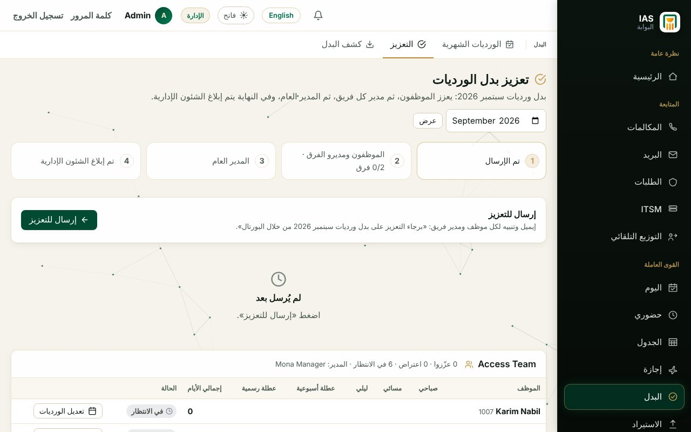
صفحة التعزيز: أيام كل موظف وحالته.
- البدل بيتحسب من جدول البوابة وحضور الموارد البشرية.
- الموظف: كل الورديات (صباحي، مسائي، ليلي) + العطلات. المدير: الصباحي + العطلات.
- المدير يقدر يعزز بالنيابة عن أي موظف، ويشوف الاعتراضات.
- تذكير بالإيميل كل يوم شغل الساعة 10 للي ما عززش.
- بدل الورديات: تصدير Excel للشهر (الأدمن ومن له صلاحية).
مبلغ كل نوع يوم والعملة من إعدادات الحضور › القواعد والبدل.
الاستيراد ونسيان البصمة إعدادات الحضور والانصراف
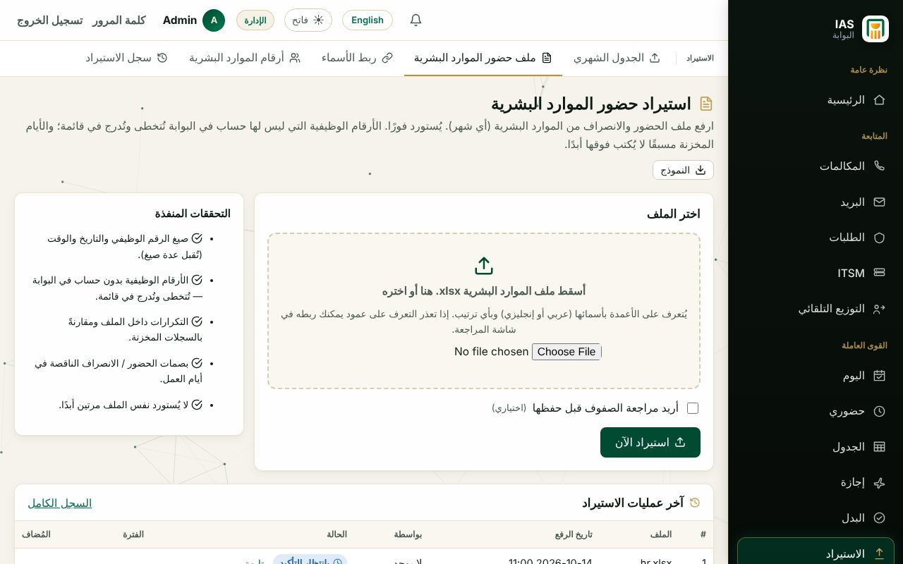
رفع ملف الحضور والانصراف.
- ملف حضور الموارد البشرية: ارفع ملف الإكسل، وبيتستورد على طول.
- اللي ناسي بصمة حضور أو انصراف يوصله تنبيه وإيميل، ومديره يوصله إيميل بأسماء فريقه.
- أرقام الموارد البشرية: لو رقم في الملف مش مربوط بحساب، اربطه مرة واحدة (الاسم «خالد فكري» = «خالد محمد فكري» بيترابط لوحده).
- الجدول الشهري (رفع الإكسل) وربط الأسماء وسجل الاستيراد.
التحليل الرؤى › التحليل › الحضور والانصراف
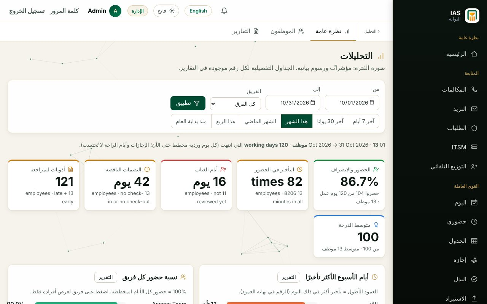
نظرة عامة على الفترة.
- نظرة عامة: نسبة الحضور، التأخير، الغياب، البصمات الناقصة.
- الموظفون والتقارير: الجداول التفصيلية.
- اختار الفترة والفريق ودوس تطبيق.
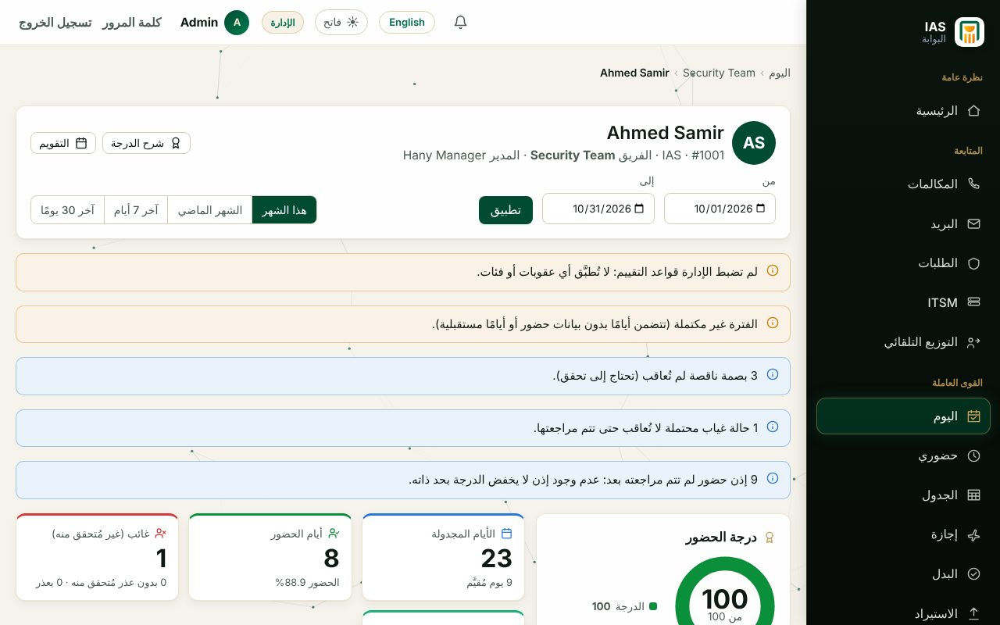
لوحة الموظف: اضغط على اسم أي موظف.
- أيام الحضور والتأخير والغياب لكل موظف.
- شرح الدرجة يوضح حساب درجة الحضور.
- التنبيهات فوق بتقول إيه محتاج مراجعة.
الإعدادات والصلاحيات الشئون الإدارية والأدمن
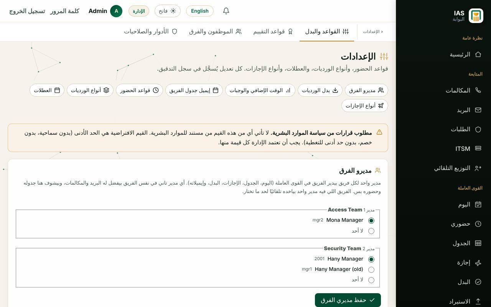
إعدادات الحضور والانصراف.
- القواعد والبدل: السماح بالتأخير، مديري الفرق، قواعد ومبالغ بدل الورديات، التذكير، جدول الفريق (To/CC).
- قواعد التقييم، الموظفون والفرق، الأدوار والصلاحيات، وسجل التدقيق.
- الأدمن: من الإدارة › المستخدمون يحدد الدور (مدير / مسؤول الحضور والانصراف) ويعلّم «المدير العام» أو صلاحية «بدل الورديات».
الموظف: جدولي القائمة › جدولي
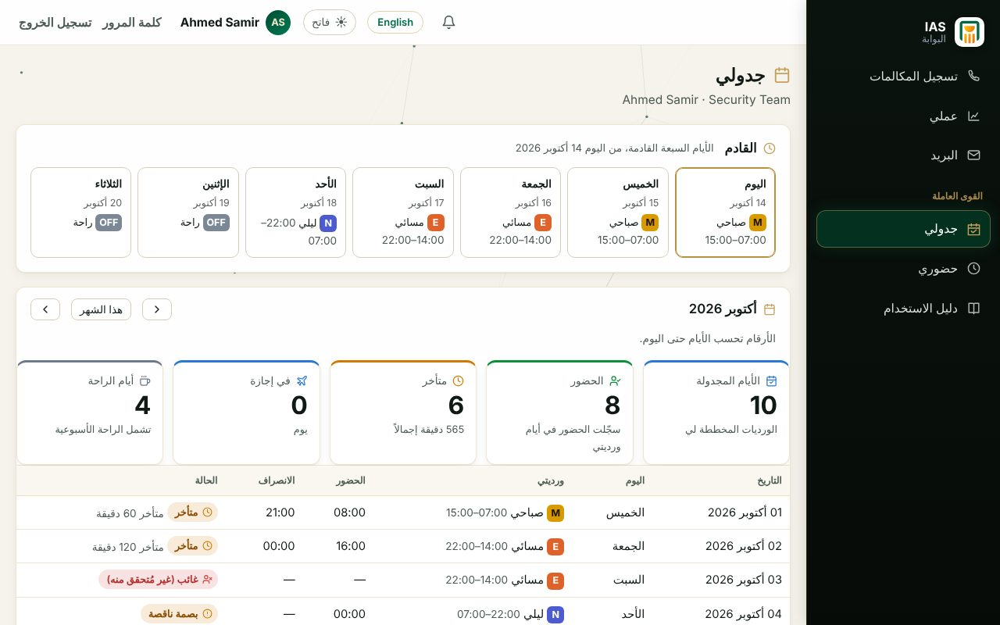
ورديات الأيام الجاية وبدل الورديات.
- شوف ورديات الـ 14 يوم الجايين والشهر.
- آخر الشهر: تعزيز بدل ورديتي أو اعتراض مع كتابة السبب.
- نسيت بصمة؟ هيوصلك تنبيه وإيميل.